ЛАБОРАТОРНАЯ РАБОТА № 10
ИЗУЧЕНИЕ СЕТИ ЭВМ С
ИСПОЛЬЗОВАНИЕМ СИСТЕМНЫХ УТИЛИТ
Цель работы — используя стандартные сетевые утилиты, проанализировать конфигурацию сети на платформе ОС Windows, т.е. получить свой IP-адрес, узнать имя домена, имена компьютеров, входящих в домен, просмотреть и при необходимости подключить общие ресурсы, определить причину возможных неполадок, так же получить информацию об использовании портов.
Теоретическая часть
Мониторинг и анализ сети представляют собой важные этапы контроля работы сети. Для решения этих задач регулярно производится сбор данных, который дает базу для измерения реакции сети на изменения и перегрузки. Чтобы осуществить сетевую передачу, нужно проверить корректность подключения клиента к сети, наличие у клиента хотя бы одного протокола сервера, знать IP-адрес компьютеров сети и т. д. Поэтому в сетевых операционных системах, и в частности, в Windows, существует множество мощных утилит для пересылки текстовых сообщений, управления общими ресурсами, диагностике сетевых подключений, поиска и обработки ошибок. Утилиты запускаются из командной строки или из сеанса MS DOS.
Системные утилиты
Утилита hostname
Выводит имя локального компьютера (хоста). Она доступна только после установки поддержки протокола TCP/IP.
Утилита ipconfig
Выводит диагностическую информацию о конфигурации сети TCP/IP. Эта утилита позволяет просмотреть текущую конфигурацию IP-адресов компьютеров сети. Синтаксис утилиты ipconfig:
ipconfig [/all | /renew [адаптер] | /release [адаптер]],
где all - выводит сведения о имени хоста, DNS (Domain Name Service), типе узла, IP-маршрутизации и др. Без этого параметра команда ipconfig выводит только IP-адреса, маску подсети и основной шлюз;
/renew [адаптер] - обновляет параметры конфигурации DHCP (Dynamic Host Configuration Protocol – автоматическая настройка IP-адресов). Эта возможность доступна только на компьютерах, где запущена служба клиента DHCP. Для задания адаптера используется имя, выводимое командой ipconfig без параметров;
/release [адаптер] - очищает текущую конфигурацию DHCP. Эта возможность отключает TCP/IP на локальных компьютерах и доступна только на клиентах DHCP. Для задания адаптера используется имя, выводимое командой ipconfig без параметров. Эта команда часто используется перед перемещением компьютера в другую сеть. После использования утилиты ipconfig /release, IP-адрес становиться доступен для назначения другому компьютеру.
Запущенная без параметров, команда ipconfig выводит полную конфигурацию TCP/IP, включая IP адреса и маску подсети.
Утилита net view
Просматривает список доменов, компьютеров или общих ресурсов на данном компьютере. Синтаксис утилиты net view:
net view [\\компьютер | /domain[:домен]];
net view /network:nw [\\компьютер] – используется в сетях Novell NetWare,
где \\компьютер - задает имя компьютера для просмотра общих ресурсов;
/domain[:домен] - задает домен, для которого выводится список компьютеров. Если параметр не указан, выводятся сведения обо всех доменах в сети;
/network:nw - выводит все доступные серверы в сети Novell NetWare. Если указано имя компьютера, выводится список его ресурсов в сети Net-Ware. С помощью этого ключа могут быть просмотрены ресурсы и в других локальных сетях.
Вызванная без параметров, утилита выводит список компьютеров в текущем домене.
Утилита ping
Проверяет соединения с удаленным компьютером или компьютерами. Эта команда доступна только после установки поддержки протокола TCP/IP. Синтаксис утилиты ping:
ping [-t] [-a] [-n счетчик] [-l длина] [-f] [-i ttl] [-v тип] [-r счетчик] [-s число] [[-j список_комп] | [-k список_комп]] [-w интервал] список_назн,
где -t - повторяет запросы к удаленному компьютеру, пока программа не будет остановлена;
-a - разрешает имя компьютера в адрес;
-n счетчик - передается число пакетов ECHO, заданное параметром. По умолчанию – 4;
-l длина - отправляются пакеты типа ECHO, содержащие порцию данных заданной длины. По умолчанию - 32 байта, максимум – 65527;
-f - отправляет пакеты с флагом запрещения фрагментации (Do not Fragment). Пакеты не будут разрываться при прохождении шлюзов на своем маршруте;
-i ttl - устанавливает время жизни пакетов TTL (Time To Live);
-v тип - устанавливает тип службы (Type Of Service) пакетов;
-r счетчик - записывает маршрут отправленных и возвращенных пакетов в поле записи маршрута Record Route. Параметр счетчик задает число компьютеров в интервале от 1 до 9;
-s число - задает число ретрансляций на маршруте, где делается отметка времени;
-j список_комп - направляет пакеты по маршруту, задаваемому параметром список_комп. Компьютеры в списке могут быть разделены промежуточными шлюзами (свободная маршрутизация). Максимальное количество, разрешаемое протоколом IP, равно 9;
-k список_комп - направляет пакеты по маршруту, задаваемому параметром список_комп. Компьютеры в списке не могут быть разделены промежуточными шлюзами (ограниченная маршрутизация). Максимальное количество, разрешаемое протоколом IP, равно 9;
-w интервал - указывает промежуток времени ожидания (в миллисекундах);
список_назн - указывает список компьютеров, которым направляются запросы;
Утилита netstat
Выводит статистику протокола и текущих подключений сети TCP/IP. Эта команда доступна только после установки поддержки протокола TCP/IP. Синтаксис утилиты netstat:
netstat [-a] [-e] [-n] [-s] [-p протокол] [-r] [интервал],
где -a - выводит все подключения и сетевые порты. Подключения сервера обычно не выводятся;
-e - выводит статистику Ethernet. Возможна комбинация с ключом –s;
-n - выводит адреса и номера портов в шестнадцатеричном формате (а не имена);
-s - выводит статистику для каждого протокола. По умолчанию выводится статистика для TCP, UDP, ICMP (Internet Control Message Protocol) и IP. Ключ -p может быть использован для указания подмножества стандартных протоколов;
-p протокол - выводит соединения для протокола, заданного параметром. Параметр может иметь значения tcp или udp. Если используется с ключом -s для вывода статистики по отдельным протоколам, то параметр может принимать значения tcp, udp, icmp или ip;
-r - выводит таблицу маршрутизации;
интервал - обновляет выведенную статистику с заданным в секундах интервалом. Нажатие клавиш CTRL+B останавливает обновление статистики. Если этот параметр пропущен, netstat выводит сведения о текущей конфигурации один раз.
Утилита tracert
Диагностическая утилита, предназначенная для определения маршрута до точки назначения с помощью посылки эхо-пакетов протокола ICMP с различными значениями срока жизни (TTL, Time-To-Live). При этом требуется, чтобы каждый маршрутизатор на пути следования пакетов уменьшал эту величину по крайней мере на 1 перед дальнейшей пересылкой пакета. Это делает параметр TTL эффективным счетчиком числа ретрансляций. Предполагается, что когда параметр TTL становится равен 0, маршрутизатор посылает системе-источнику сообщение ICMP «Time Exceeded». Утилита tracert определяет маршрут путем посылки первого эхо-пакета с параметром TTL, равным 1, и с последующим увеличением этого параметра на единицу до тех пор, пока не будет получен ответ из точки назначения или не будет достигнуто максимальное до-пустимое значение TTL. Маршрут определяется проверкой сообщений ICMP «Time Exceeded», полученных от промежуточных маршрутизаторов. Однако некоторые маршрутизаторы сбрасывают пакеты с истекшим временем жизни без отправки соответствующего сообщения. Эти маршрутизаторы невидимы для утилиты tracert. Синтаксис утилиты tracert:
tracert [-d] [-h макс_узл] [-j список_компьютеров] [-w интервал] точка_назн,
где -d - отменяет разрешение имен компьютеров в их адреса;
-h макс_узл - задает максимальное количество ретрансляций, используемых при поиске точки назначения;
-j список_компьютеров - задает список_компьютеров для свободной маршрутизации;
-w интервал - задает интервал в миллисекундах, в течение которого будет ожидаться ответ;
точка_назн - указывает имя конечного компьютера.
Утилита net use
Подключает общие сетевые ресурсы или выводит информацию о подключениях компьютера. Команда также управляет постоянными сетевыми соединениями. Синтаксис утилиты net use:
net use [устройство | *] [\\компьютер\ресурс[\том]] [пароль | *]] [/user:[домен\]имя_пользователя] [[/delete] | [/persistent:{yes | no}]]
net use устройство [/home[пароль | *]] [/delete:{yes | no}]
net use [/persistent:{yes | no}],
где устройство - задает имя ресурса при подключении/отключении. Существует два типа имен устройств: дисководы (от D: до Z:) и принтеры (от LPT1: до LPT3:). Ввод символа звездочки обеспечит подключение к следующему доступному имени устройства;
\\компьютер\ресурс - указывает имя сервера и общего ресурса. Если параметр компьютер содержит пробелы, все имя компьютера от двойной обратной черты (\\) до конца должно быть заключено в кавычки (" "). Имя компьютера может иметь длину от 1 до 15 символов;
\том - задает имя тома системы Novell NetWare. Для подключения к серверам Novell NetWare должна быть запущена служба клиента сети Novell NetWare (для Windows 2000 Professional) или служба шлюза сети Novell NetWare (для Windows 2000 Server);
пароль - задает пароль, необходимый для подключения к общему ресурсу;
* - выводит приглашение для ввода пароля. При вводе с клавиатуры символы пароля не выводятся на экран;
/user - задает другое имя пользователя для подключения к общему ресурсу;
домен - задает имя другого домена. Если домен не указан, используется текущий домен;
имя_пользователя - указывает имя пользователя для подключения;
/delete - отменяет указанное сетевое подключение. Если подключение задано с символом звездочки, будут отменены все сетевые подключения;
/home - подключает пользователя к его основному каталогу;
/persistent - управляет постоянными сетевыми подключениями. По умолчанию берется последнее использованное значение. Подключения без устройства не являются постоянными;
уes - cохраняет все существующие соединения и восстанавливает их при следующем подключении;
no - не сохраняет выполняемые и последующие подключения. Существующие подключения восстанавливаются при следующем входе в систему. Для удаления постоянных подключений используется ключ /delete.
Вызванная без параметров утилита net use извлекает список сетевых подключений.
Утилита net send
Отправка сообщения другому пользователю, компьютеру или псевдониму в сети. Служба сообщений должна быть запущена на компьютере для получения сообщений. Синтаксис утилиты net send:
net send {имя | * | /domain[:имя] | /users} сообщение,
где имя - указывает имя пользователя, имя компьютера или псевдоним, которому будет отправлено сообщение. Если имя компьютера содержит пробелы, оно должно быть заключено в кавычки (" "). Длинные имена пользователей, введенные в формате NetBIOS, могут привести к возникновению исключительных ситуаций. Имена NetBIOS ограничены 16 символами, но Windows 2000 резервирует 16-ый символ;
* - отправляет сообщение всем членам группы;
/domain[:имя] - отправляет сообщение всем именам в домене компьютера. Если параметр имя указан, сообщение будет отправлено всем именам заданного домена или рабочей группы;
/users - отправляет сообщение всем пользователям, подключенным к серверу;
сообщение - указывает текст сообщения.
Практическая часть
Задание на лабораторную работу. Используя стандартные сетевые утилиты, проанализировать конфигурацию сети на платформе ОС Windows, т.е. получить свой IP-адрес, узнать имя домена, имена компьютеров, входящих в домен.
Утилита hostname
Выводит имя локального компьютера (хоста). Она доступна только после установки поддержки протокола TCP/IP. Пример вызова команды hostname:
Пример выполнения задания:
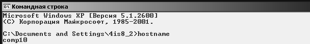
Рис. 10. 1
Утилита ipconfig
Выводит диагностическую информацию о конфигурации сети TCP/IP. Эта утилита позволяет просмотреть текущую конфигурацию IP-адресов компьютеров сети. Синтаксис утилиты ipconfig:
ipconfig [/all | /renew [адаптер] | /release [адаптер]],
Примеры выполнения задания:
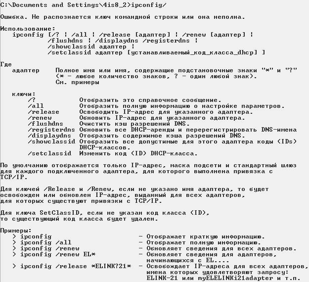
Рис. 10. 2
all - выводит сведения о имени хоста, DNS (Domain Name Service), типе узла, IP-маршрутизации и др. Без этого параметра команда ipconfig выводит только IP-адреса, маску подсети и основной шлюз;
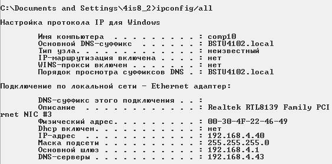
Рис. 10. 3
/renew [адаптер] - обновляет параметры конфигурации DHCP (Dynamic Host Configuration Protocol – автоматическая настройка IP-адресов). Эта возможность доступна только на компьютерах, где запущена служба клиента DHCP. Для задания адаптера используется имя, выводимое командой ipconfig без параметров;
Рис. 10. 4
/release [адаптер] - очищает текущую конфигурацию DHCP. Эта возможность отключает TCP/IP на локальных компьютерах и доступна только на клиентах DHCP. Для задания адаптера используется имя, выводимое командой ipconfig без параметров. Эта команда часто используется перед перемещением компьютера в другую сеть. После использования утилиты ipconfig /release, IP-адрес становиться доступен для назначения другому компьютеру.
Рис. 10. 5
Запущенная без параметров, команда ipconfig выводит полную конфигурацию TCP/IP, включая IP адреса и маску подсети.
- без параметров:
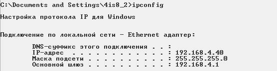
Рис. 10. 6
Утилита net view
Просматривает список доменов, компьютеров или общих ресурсов на данном компьютере. Синтаксис утилиты net view:
net view [\\компьютер | /domain[:домен]];
Вызванная без параметров, утилита выводит список компьютеров в текущем домене.
Примеры выполнения задания:
- без параметров:
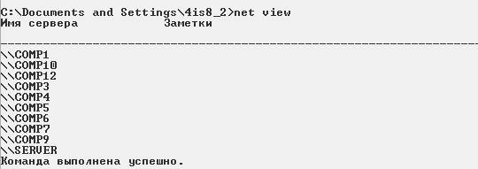
Рис. 10. 7
- с параметром \\компьютер:
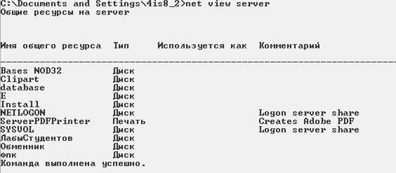
Рис. 10. 8
Утилита ping
Проверяет соединения с удаленным компьютером или компьютерами. Эта команда доступна только после установки поддержки протокола TCP/IP. Синтаксис утилиты ping:
ping [-t] [-a] [-n счетчик] [-l длина] [-f] [-i ttl] [-v тип] [-r счетчик] [-s число] [[-j список_комп] | [-k список_комп]] [-w интервал] список_назн,
Примеры выполнения задания:
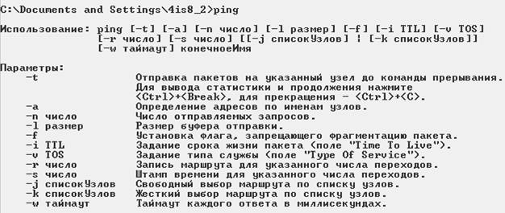
Рис. 10. 9
-без параметра:
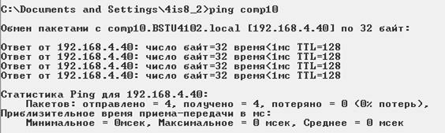
Рис. 10. 10
где -t - повторяет запросы к удаленному компьютеру, пока программа не будет остановлена;
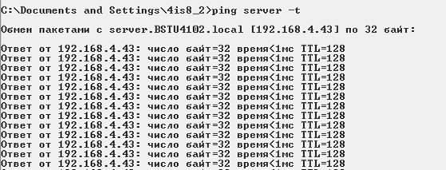
Рис. 10. 11
-a - разрешает имя компьютера в адрес;
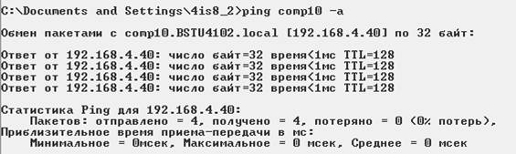
Рис. 10. 12
-n счетчик - передается число пакетов ECHO, заданное параметром. По умолчанию – 4;
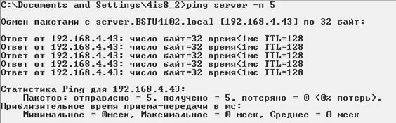
Рис. 10. 13
-l длина - отправляются пакеты типа ECHO, содержащие порцию данных заданной длины. По умолчанию - 32 байта, максимум – 65527;
Рис. 10. 14
-f - отправляет пакеты с флагом запрещения фрагментации (Do not Fragment). Пакеты не будут разрываться при прохождении шлюзов на своем маршруте;

Рис. 10. 15
-i ttl - устанавливает время жизни пакетов TTL (Time To Live);
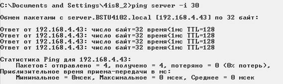
Рис. 10. 16
-r счетчик - записывает маршрут отправленных и возвращенных пакетов в поле записи маршрута Record Route. Параметр счетчик задает число компьютеров в интервале от 1 до 9;
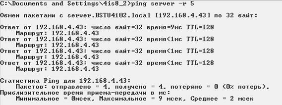
Рис. 10. 17
-s число - задает число ретрансляций на маршруте, где делается отметка времени;
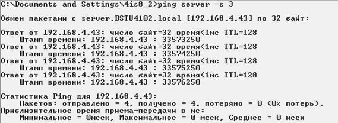
Рис. 10. 18
Утилита netstat
Выводит статистику протокола и текущих подключений сети TCP/IP. Эта команда доступна только после установки поддержки протокола TCP/IP. Синтаксис утилиты netstat:
netstat [-a] [-e] [-n] [-s] [-p протокол] [-r] [интервал],
Примеры выполнения задания:
где -a - выводит все подключения и сетевые порты. Подключения сервера обычно не выводятся;
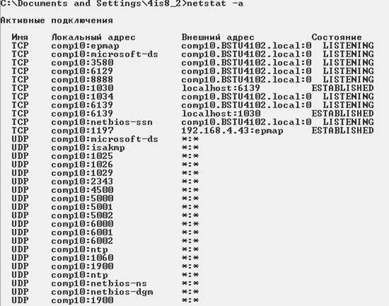
Рис. 10. 19
-e - выводит статистику Ethernet. Возможна комбинация с ключом –s;
Рис. 10. 20
-n - выводит адреса и номера портов в шестнадцатеричном формате (а не имена);
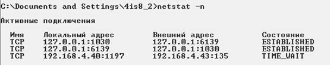
Рис. 10. 21
-s - выводит статистику для каждого протокола. По умолчанию выводится статистика для TCP, UDP, ICMP (Internet Control Message Protocol) и IP. Ключ -p может быть использован для указания подмножества стандартных протоколов;
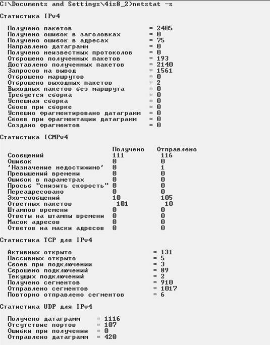
Рис. 10. 22
-p протокол - выводит соединения для протокола, заданного параметром. Параметр может иметь значения tcp или udp. Если используется с ключом -s для вывода статистики по отдельным протоколам, то пара-метр может принимать значения tcp, udp, icmp или ip;
Рис. 10. 23
-r - выводит таблицу маршрутизации;
интервал - обновляет выведенную статистику с заданным в секундах интервалом. Нажатие клавиш CTRL+B останавливает обновление статистики. Если этот параметр пропущен, netstat выводит сведения о текущей конфигурации один раз.
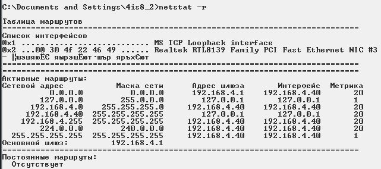
Рис. 10. 24
- без параметров:
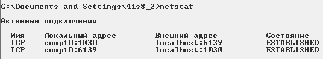
Рис. 10. 25
Утилита tracert
Диагностическая утилита, предназначенная для определения маршрута до точки назначения с помощью посылки эхо-пакетов протокола ICMP с раз-личными значениями срока жизни (TTL, Time-To-Live). При этом требуется, чтобы каждый маршрутизатор на пути следования пакетов уменьшал эту величину по крайней мере на 1 перед дальнейшей пересылкой пакета. Это делает параметр TTL эффективным счетчиком числа ретрансляций. Предполагается, что когда параметр TTL становится равен 0, маршрутизатор посылает системе-источнику сообщение ICMP «Time Exceeded». Утилита tracert определяет маршрут путем посылки первого эхо-пакета с параметром TTL, равным 1, и с последующим увеличением этого параметра на единицу до тех пор, пока не будет получен ответ из точки назначения или не будет достигнуто максимальное допустимое значение TTL. Маршрут определяется проверкой сообщений ICMP «Time Exceeded», полученных от промежуточных маршрутизаторов. Однако некоторые маршрутизаторы сбрасывают пакеты с истекшим временем жизни без отправки соответствующего сообщения. Эти маршрутизаторы невидимы для утилиты tracert. Синтаксис утилиты tracert:
tracert [-d] [-h макс_узл] [-j список_компьютеров] [-w интервал] точка_назн,
Примеры выполнения задания:
-без параметров
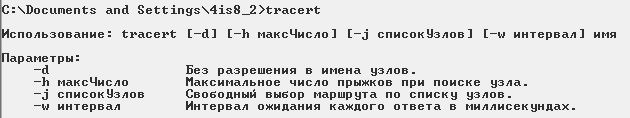
Рис. 10. 26
-d - отменяет разрешение имен компьютеров в их адреса;
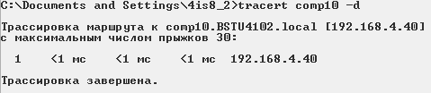
Рис. 10. 27
-h макс_узл - задает максимальное количество ретрансляций, используе-мых при поиске точки назначения;
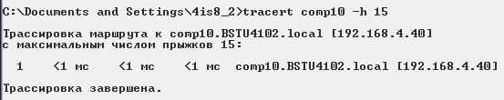
Рис. 10. 28
-w интервал - задает интервал в миллисекундах, в течение которого будет ожидаться ответ; точка_назн - указывает имя конечного компьютера.
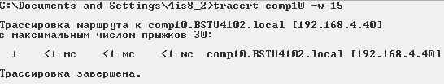
Рис. 10. 29
Утилита net use
Подключает общие сетевые ресурсы или выводит информацию о подключениях компьютера. Команда также управляет постоянными сетевыми соединениями.
Синтаксис утилиты net use:
net use [устройство | *] [\\компьютер\ресурс[\том]] [пароль | *]] [/user:[домен\]имя_пользователя] [[/delete] | [/persistent:{yes | no}]]
Примеры выполнения задания:
Вызванная без параметров утилита net use извлекает список сетевых подключений.
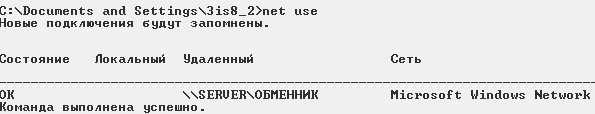
Рис. 10. 30
Утилита net send
Отправка сообщения другому пользователю, компьютеру или псевдониму в сети. Служба сообщений должна быть запущена на компьютере для получения сообщений. Синтаксис утилиты net send:
net send {имя | * | /domain[:имя] | /users} сообщение,
Примеры выполнения задания:
* - отправляет сообщение всем членам группы;
сообщение - указывает текст сообщения.
Рис. 10. 31
Рекомендации и замечания
На основе рассмотренных сетевых утилит ОС Windows разрабатываются пользовательские приложения, реализующие мониторинг и диагностику ло-кальных сетей. Они позволяют минимизировать усилия по поиску и исправле-нию ошибок в конфигурации сети и помогают системному администратору контролировать трафик. В настоящее время создано большое количество про-грамм этого направления: Monitor It, Nautilus NetRanger, CiscoWorks 2000, Ser-viceSentinel и д.р. Они распространяются через Internet на условиях freeware. Windows NT Server обладает встроенными инструментами мониторинга: Event Viewer, Performance Monitor, Network Monitor.
Содержание отчета
1) Титульный лист.
2) Постановку задачи.
3) Теоретические сведения.
4) Иерархическую схему процедур.
5) Текст основных процедур.
6) Результаты работы
7) Выводы.
Контрольные вопросы
1. Исправить синтаксис утилиты. C:\Program Files\Far\>net view all.
2. Для чего нужна утилита net send? Описать ее синтаксис.
3. Укажите неверный параметр C:\net use B:\\fit-s1\:install.
4. Можно ли утилитой tracert задать максимальное число ретрансляций?
5. Какой протокол необходим для работы с утилитой ping?
6. Какой результат выдаст утилита net stat с параметрами –a s –r?
7. Для чего необходима утилита hostname?
8. Зачем используется параметр all в утилите ipconfig?